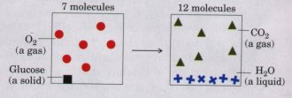
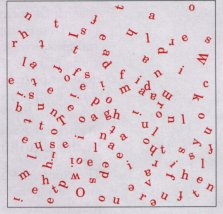

Entropy: The Advantages of Being Disorganized
The term entropy, which literally means "a change within," was first used in 1851 by Rudolf Clausius, one of the promulgators of the second law. A rigorous quantitative defmition of entropy involves statistical and probability considerations. However, its nature can be illustrated qualitatively by three simple examples, each of which shows one aspect of entropy. The key descriptors of entropy are randomness or disorder, manifested in different ways.
Case 1: The Teakettle and the Randomization of Heat
We know that steam generated from boiling water can do useful work. But suppose we turn off the burner under a teakettle full of water at 100 °C (the "system") in the kitchen (the "surroundings") and allow it to cool. As it cools, no work will be done, but heat will pass from the teakettle to the surroundings, raising the temperature of the surroundings (the kitchen) by an infmitesimally small amount until complete equilibrium is attained. At this point all parts of the teakettle and the kitchen will be at precisely the same temperature. The free energy that was once concentrated in the teakettle of hot water at 100 °C, potentially capable of doing work, has disappeared. Its equivalent in heat energy is still present in the teakettle + kitchen (i.e., the "universe") but has become completely randomized throughout. This energy is no longer available to do work because there is no temperature differential within the kitchen. Moreover, the increase in entropy of the kitchen (the surroundings) is irreversible. We know from everyday experience that heat will never spontaneously pass back from the kitchen into the teakettle to raise the temperature of the water to 100 °C again.
Case 2: The Oxidation of Glucose
Entropy is a state or condition not only of energy but also of matter. Aerobic organisms extract free energy from glucose obtained from their surroundings. To extract this energy they oxidize the glucose with molecular oxygen, also obtained from the surroundings. The end products of the oxidative metabolism of glucose are CO2 and H2O, which are returned to the surroundings. In this process the surroundings undergo an increase in entropy, whereas the organism itself remains in a steady state and undergoes no change in its internal order. Although some of the entropy arises from the dissipation of heat, entropy also arises from another kind of disorder, illustrated by the equation for the oxidation of glucose by living organisms, which we can write as
C6H12O6+6O2
 6 CO2+6H2O
6 CO2+6H2O
or represent schematically as

The atoms contained in 1 molecule of glucose plus 6 molecules of oxygen, a total of 7 molecules, are more randomly dispersed by the oxidation reaction and are now present in a total of 12 molecules (6CO2 + 6H2O).
Whenever a chemical reaction proceeds so that there is an increase in the number of moleculesor when a solid substance, such as glucose, is converted into liquid or gaseous products, which have more freedom to move or fill space than a solidthere is an increase in molecular disorder and thus an increase in entropy.
Case 3: Information and Entropy
The following short passage from Julius Caesar, Act IV, Scene 23, is spoken by Brutus, when he realizes that he must face Mark Antony's army. It is an information-rich nonrandom arrangement of 125 letters of the English alphabet:
There is a tide in the affairs of men,
Which, taken at the flood, leads on to fortune;
Omitted, all the voyage of their life
Is bound in shallows and in miseries.
In addition to what this quotation says overtly, it has many hidden meanings. It not only reflects a complex sequence of events in the play, it also echoes the play's ideas on conflict, ambition, and the demands of leadership. Permeated with Shakespeare's understanding of human nature, it is very rich in information.

However, if the 125 letters making up this quotation were allowed to fall into a completely random, chaotic pattern, as shown in the following box, they would have no meaning whatsoever.In this form the 125 letters would contain little or no information, but would be very rich in entropy. Such considerations have led to the conclusion that information is a form of energy; information has been called "negative entropy." In fact, the branch of mathematics called information theory, which is basic to the programming logic of computers, is closely related to thermodynamic theory. Living organisms are highly ordered, nonrandom structures, immensely rich in information and thus entropy-poor.